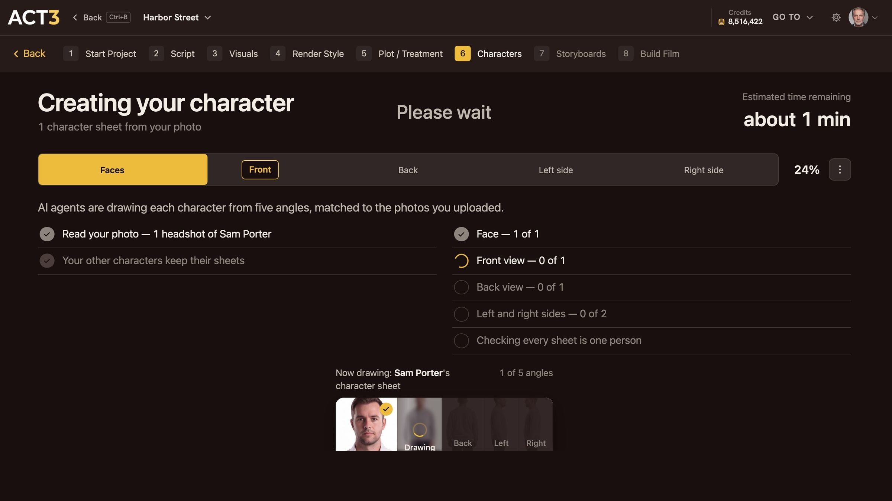

Step 5 of 8
Let it render
Approve the credits, and ACT 3 AI draws the sheet from your photo. Watch the face, front, back, left and right fill in. It takes about a minute.

Creating your character: five stages, one angle at a time. The finished sheet opens on its own.
What is happening
AI agents draw the character from five angles, matched to the photo you uploaded. The bar across the top shows the five stages in order:
- Faces: the headshot, cleaned up and lit evenly, from your photo.
- Front: the full body, facing the camera.
- Back: the same person from behind.
- Left side and Right side: both profiles.
Last, ACT 3 AI checks that every view is one person. The strip at the bottom shows the angle being drawn now.
What to do while it runs
Nothing. You can leave the page; the work keeps going and the character's tile on the Characters page fills in when it is done. For one character it takes about a minute.
If a stage fails, the strip says so and offers a retry. A failed drawing is not charged.
Why you go next to the sheet
When the last angle is done, the new character's page opens with the finished sheet. Step 6 reads it with you.